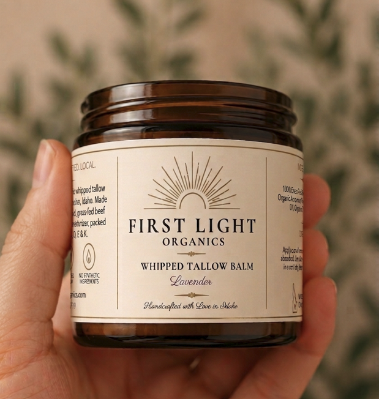
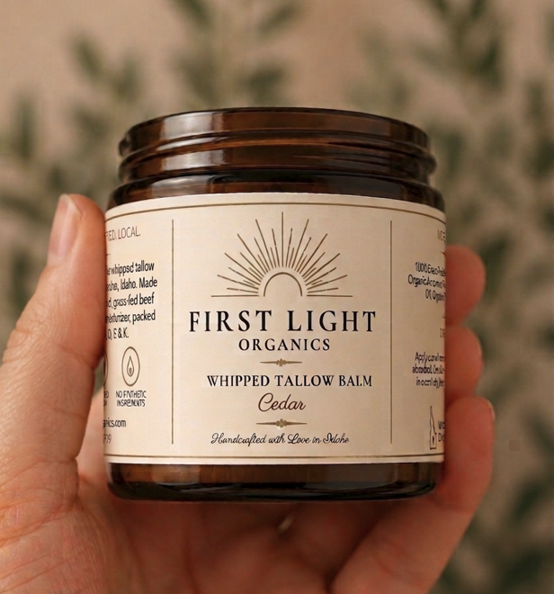
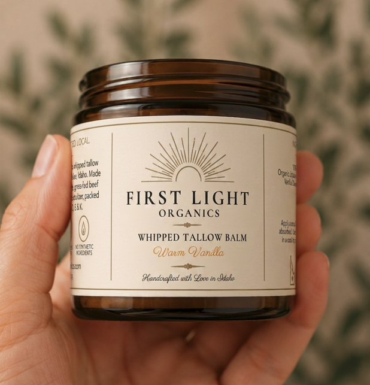

First Light Organics
Small-batch whipped tallow balm, handcrafted in Boise, Idaho.

First Light Organics
Whipped Tallow Balm
4 fl oz jar · 2.35 oz net wt
$29.00
Grass-fed beef tallow, organic jojoba oil, arrowroot powder, organic lavender and frankincense essential oils. Simple, honest ingredients that your skin recognizes.
Add to Cart
First Light Organics
Whipped Tallow Balm
4 fl oz jar · 2.35 oz net wt
$29.00
Grass-fed beef tallow, organic jojoba oil, arrowroot powder, cedarwood essential oil. Warm, grounded, and woody. A scent that settles into the skin and stays.
Add to Cart
First Light Organics
Whipped Tallow Balm
4 fl oz jar · 2.35 oz net wt
$29.00
Grass-fed beef tallow, organic jojoba oil, arrowroot powder, vanilla essential oil. Soft and warm, with a sweetness that feels natural rather than added.
Add to CartInside Every Jar
100% locally sourced from pasture-raised cattle in Idaho. The foundation of every jar.
Remarkably similar to skin's natural sebum. Absorbs quickly and helps balance moisture long-term.
A plant-derived powder that creates a silky, non-greasy finish and helps the balm absorb smoothly.
Carefully selected organic essential oils that provide a clean, natural scent and complement the skin-nourishing base.